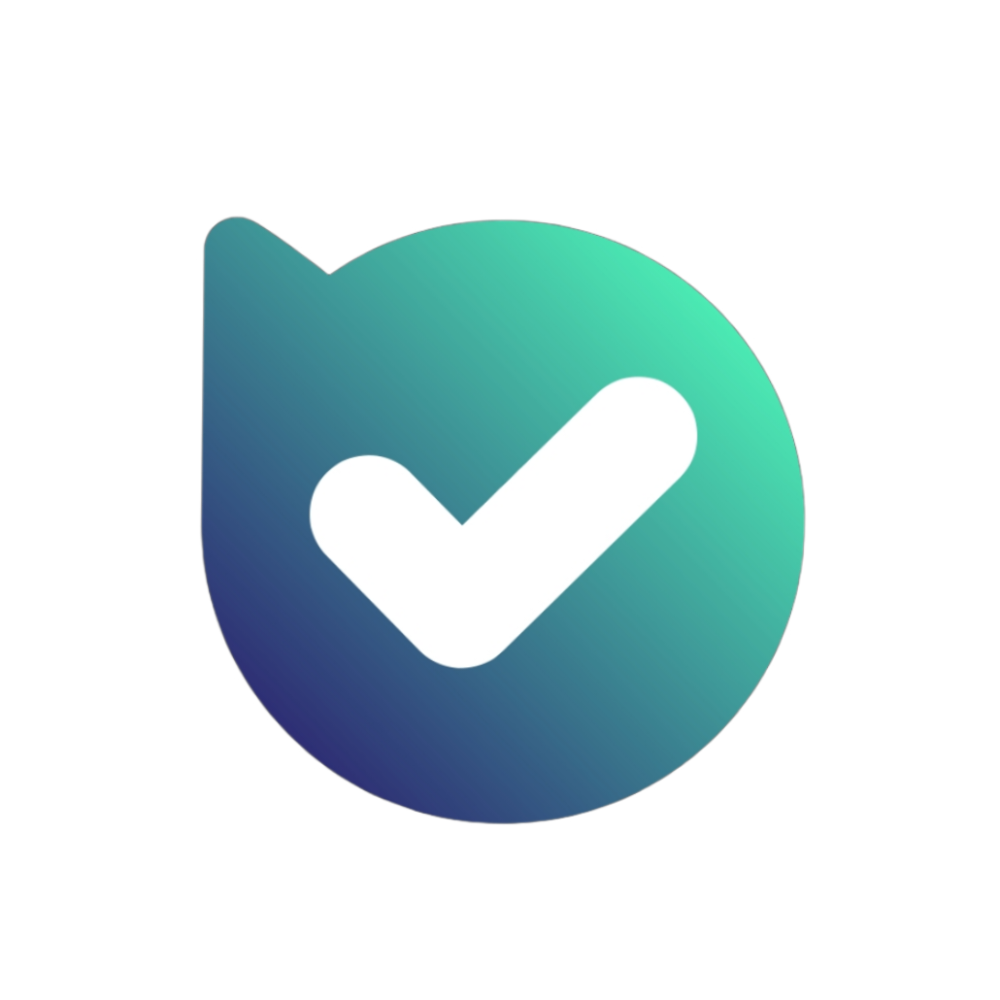
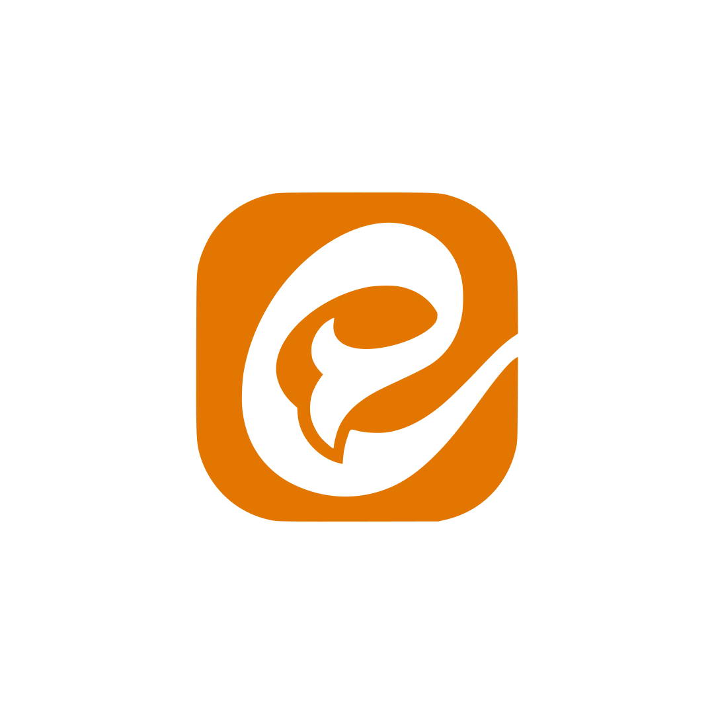
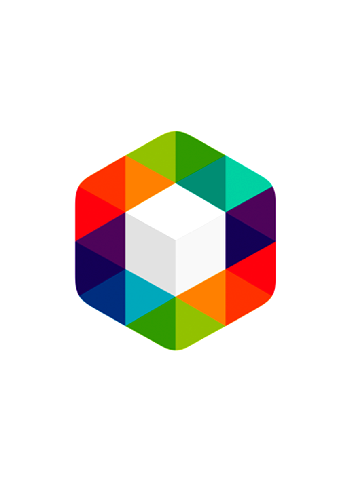

🔗 کانالها و رباتها
 ربات بله
اگر ربات بله باز نشد، از این لینک استفاده کنید:
https://ble.ir/add_members_bot
کپی
کانال بله
اگر کانال بله باز نشد، از این لینک استفاده کنید:
https://ble.ir/channel_member_and_manager_bot
کپی
کانال تلگرام
اگر تلگرام باز نشد، از این لینک استفاده کنید:
https://t.me/channel_members_and_manage_bot
کپی
ربات تلگرام
اگر تلگرام باز نشد، از این لینک استفاده کنید:
https://t.me/Members_and_Manage_Bot
کپی
 کانال ایتا
اگر کانال ایتا باز نشد، از این لینک استفاده کنید:
https://eitaa.com/bot_add_members
کپی
 کانال روبیکا
اگر کانال روبیکا باز نشد، از این لینک استفاده کنید:
https://rubika.ir/channel_members_and_manage_bot
کپی
🔙 بازگشت به صفحه اصلی